主にアーケードコントローラ (ACコン) の導入を想定しています。購入の手引きと、ACコンを使った本体プレイヤー上での操作方法についてまとめます。
・ ACコンの購入
- 購入する前に
- ボタンとマイクロスイッチについて
- 各コントローラの簡易レビューと購入先情報
- 旧型コントローラー
・ コントローラの初期設定
- PCへの接続
- 右黄色が押しっぱなしになる問題の対策
- この設定を行ってもボタンが押しっぱなしになる場合
・ キーコンフィグ設定 - beatoraja
- キーコンフィグ画面でACコンが反応しない場合
・ ゲーム画面での操作方法 - beatoraja
- 選曲画面 - beatoraja
- 楽曲選択
- オプション選択 (通常)
- オプション選択 (サブ)
- オプション選択 (アシスト)
- キーボード操作系オプション
- プレイ画面 - beatoraja
- 特殊オプションの有効化について
- オプション一覧
- リザルト画面 - beatoraja
- プラクティスモード - beatoraja
・ キーコンフィグ設定 - LR2
- 選曲画面でもACコンを使いたい場合の設定
・ ゲーム画面での操作方法 - LR2
- 選曲画面 - LR2
- 楽曲選択
- オプション選択 (通常)
- レーンカバー (SUDDEN+ / SUD+) の使用設定
- キーボード操作系オプション
- 特殊オプション・ネタオプション
- プレイ画面 - LR2
- オプション一覧
- リザルト画面 - LR2
ACコンの打鍵音は非常に大きいです。静音化改造という手はあるものの、室内ではなく床への振動が問題になる場合も多く、根本的な解決にはなりません。
購入する前に一度「自分の家の環境ではどこまで騒音を出しても許されるのか」について検討しておきましょう。
また、スイッチや筐体パーツが破損した場合、修理依頼が困難で、各自でパーツを取り寄せてメンテナンスを行わなければならない可能性があります。
メンテナンスには専門的な知識は要求されませんが、「そういうものだ」と割り切って作業するのか、カスタマーサービスに依頼するのか、自身の負担にならない選択肢を取りましょう。
「ボタン」は普段叩いている丸型ドーム部分のことで、「マイクロスイッチ」はボタンを押し込んだ時にカチッという音のする部分です。
これらは打鍵感、ボタン重さ、陥没などのメンテナンス不良に直結しやすい、非常に重要なパーツです。代表的なもの (純正パーツ) は次の通りです。
■ 三和電子製 照光式押しボタン薄型ドーム 100φ（旧型ランプホルダー） OBSA-100UMQ (三和ボタン)
■ オムロン(OMRON) V-10-1A4 形V小形基本スイッチ ピン押ボタン形 100g (オムロン製マイクロスイッチ)
しかし純正パーツは高コストなので、パーツ換装が可能なACコンの多くは自社製のボタン・スイッチを採用しており、純正パーツへの換装はオプション価格になっている場合があります。
本体のパッケージ価格で即決するのではなく、プレイの快適さも考慮して総合的に判断しましょう。(迷ったらボタンは各メーカーの自社製、スイッチは純正品がオススメです。)
■ pop'n music専用コントローラ プレミアムモデル (公式コン / Lively コン)
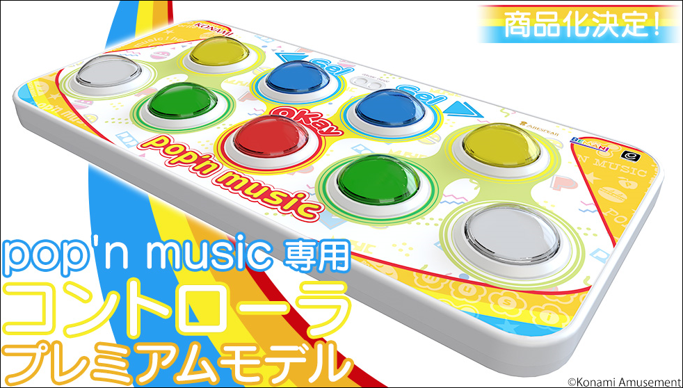
・ 2021年にコナステから発売された Pop'n Lively 専用の新型ACコン 再販待ち or 中古で入手
・ (推奨されないと思われますが PMS に標準対応 BE2PS コンバータ を購入することで PS2 にも接続可能)
・ カスタマーサービスが利用しやすい反面、メンテナンスやカスタマイズ、パーツ換装は不可 *実際には分解可能と思われますが、サポート対象外になりそうです
・ 接点ゴム製スイッチ仕様 マイクロスイッチが使われていないため 独特の打鍵感になりますが、静音性に優れています
・ ボタンの押下圧は 3N (300g / 標準より固め) 程度？ ただしストロークが浅いのでソフトタッチで十分反応します
・ 重量 3.5kg 薄型で他コントローラに比べて筐体の厚みが半分程度
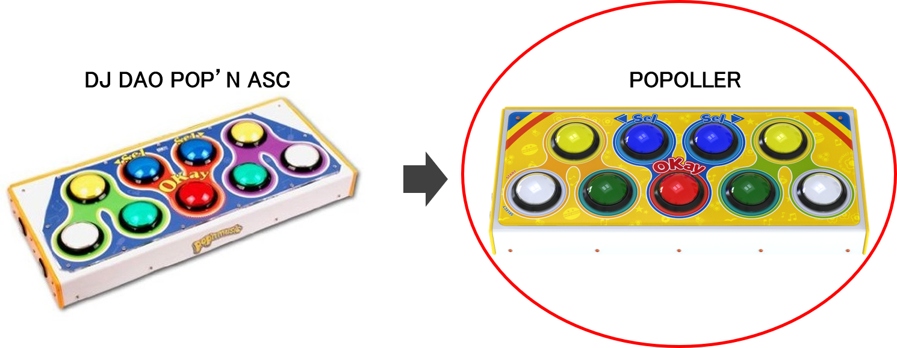
・ DAO POP'N ASC コントローラ (左図) として知られていますが、2023年に POPOLLER としてリニューアルされました (右図)
・ PMS / Pop'n Lively に標準対応 BE2PS コンバータ を購入することで PS2 にも接続可能
・ メンテナンスは各自でパーツを取り寄せて行う パーツ換装でボタン固さやストローク深さなどをカスタマイズ可能 / パーツの再販所 が充実しています
・ (2023/06 現在) START + SELECT 同時押しした際に本体プレイヤーと干渉し合う問題があり、特に beatoraja で使用する場合はキーボード入力との併用が必要
・ 旧DAOコンのボタン縦間隔問題 (詳細は下記当該欄) が解消されており、AC と同一のボタン距離になっています
・ 重量 6.2kg 堅牢な構造で歪みにくく、振動での過反応は少ない方
■ GENBU POP'N STANDARD 2019 (GENBUコン / 謎コン)
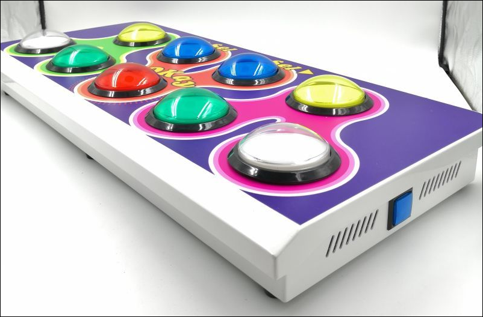
・ 2019年以降に発売されたモデル
・ 何度かのリニューアルが行われていて、一口に "GENBUコン" と言っても、現行版と過去版では性能が大きく違います。必ずデザインを確認してください。
・ PMS / Pop'n Lively に標準対応 PS2 接続は非対応 (BE2PS コンバータ で動かせるかもしれません)
・ メンテナンスは各自でパーツを取り寄せて行う 購入時に純正パーツの発注オプションがあります。
・ SELECT ボタンが無いため、キーボードの併用が必要
・ ボタンの縦間隔 (上段ボタンの中心から下段ボタンの中心までの距離) が AC より広いとの情報を頂いています。本家 130mm に対し GENBU 140mm
・ 重量 8.2kg で非常に堅牢 ただし天板がやや薄い？
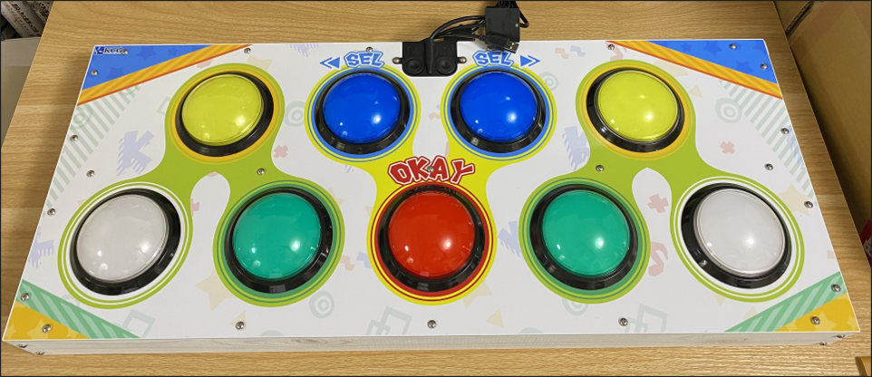
・ かみさか氏 (リンクは X(Twitter)) による自作コントローラ 不定期で販売されています。
・ PMS には標準対応 Lively にも恐らく標準対応していると思われます。PS2 接続端子はあるものの、接続が安定しない報告も？
・ オムロン製スイッチ使用、静音化処理済ながら、他のコントローラに比べて圧倒的に安価
・ 配線や筐体がデリケート メンテナンスはパーツの発注から換装まで全て各自で行う必要があり、必要な工数は他コントローラより多くなると思われます
・ 重量 3.2kg
全て、オフィシャルストアでの取り扱いが終了しているコントローラです。リサイクルショップやオークションで安価に手に入るかもしれません。
■ DJ DAO POP'N ASC (DAOコン)
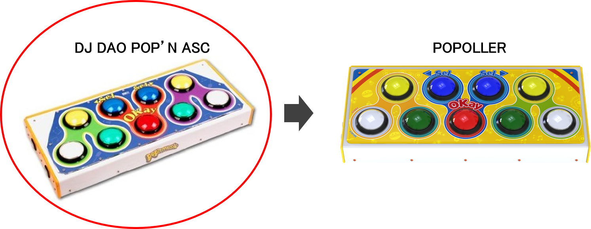
・ 従来型の DAO POP'N コントローラ
・ PS2 接続に標準対応 PMS / Pop'n Lively は初期設定 (後述) を行うと使用可能
・ メンテナンスは各自でパーツを取り寄せて行う パーツ換装でボタン固さやストローク深さなどをカスタマイズ可能 / パーツの再販所 が充実しています(POPOLLER と併用可)
・ POPOLLER で発生する START + SELECT 同時押しの不具合は、このコントローラの場合は発生しません
・ ボタンの縦間隔 (上段ボタンの中心から下段ボタンの中心までの距離) が AC より広いです。本家 130mm に対し DAO 135mm *POPOLLER で解消済
・ 重量 6kg
■ pop'n Music ARCADESTYLE CONTROLLER (旧ACコン)
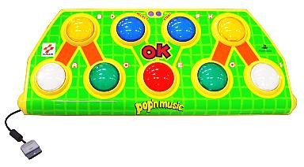
・ 旧型の公式アーケードコントローラー
・ PS2 接続に標準対応 一方 USB端子を備えていないため、PMS / Lively で使用するには PS2 to USB コンバータ(後述) が必須
・ ボタン周りの構造が特殊 & 廃版になったと思われるスイッチが使用されているため、メンテナンスやパーツ換装は困難
・ 重量は軽め 丸みを帯びたフレームになっていることもあり、滑り止めを工夫しないと筐体位置が結構ずれやすい
・ 本家AC筐体に比べ、ボタンの配置間隔が全体的にひとまわり広い
■ GENBU POP'N 2013 STANDARD / PREMIUM JAPAN MODEL (GENBUコン / 謎コン)
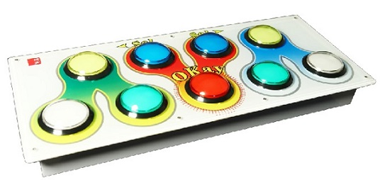
・ 謎ポプコン GENBUコンレビュー 記事 (スタンダード版)
・ 謎ポプコン PREMIUM JAPAN MODELコンレビュー 記事 (プレミアム版)
・ 恐らく PMS / Pop'n Lively では初期設定 (後述) を行えば使用可能？ PS2 接続はプレミアム版のみ対応 (スタンダード版でも BE2PS コンバータ で動かせるかもしれません)
・ メンテナンスは各自でパーツを取り寄せて行う
・ 天板やネジ穴が破損しやすい、基盤の寿命が短いとの報告あり
ACコンに付属したUSB端子をPCに接続します。USBで接続する場合、ハブなどを介さずにマザーボード由来のポートへ接続することが推奨されています。
配線の事情等でハブを使わざるを得ない場合は、バスパワーのものは極力避けるか、LED給電用のUSB端子を コンセントから直取りしたUSB充電ポートに接続してください。
旧ACコンなど PS2端子しか備わっていないコントローラを接続する場合は PS2 to USB コンバータが必要なのですが、コンバータは入手困難な上、結構シビアな相性問題があります。
ELECOM 社のコンバータは相性が良いようです。動作確認の報告を頂いている機種を例示しますので、購入の参考にしてください。
■ ELECOM JC-PS101U シリーズ
■ ELECOM JC-PS102U シリーズ
正常に接続された場合、自動的にドライバがインストールされ、PC上でボタン入力が検出される状態になります。
この段階で、右黄色ボタンが押しっぱなしになったままでボタン割り当てができない という報告がよく挙がります。
これはPS2との接続が主だった時代のコントローラ全般に共通する基盤由来の問題で、PMS または Pop'n Lively に標準対応している新型のコントローラでは発生しません。
もしこの問題が見られる場合は、次の初期設定を行ってください。
(1) Win10の場合、左下検索窓に「USB ゲーム」と入力し、USB ゲーム コントローラの設定 画面を立ち上げます。
*コントロールパネル > デバイスとプリンターの表示 > 対応するゲームコントローラを右クリック > 設定 でも可
*Win8以前のOSでも似たような手順で辿りつけます。
(2) コントローラ (筆者のDAOコンの場合は "Joystick" 表示) を選択し、プロパティ > 設定タブ から 調整
(3) ACコンには触らず、マウスで 次へ を設定完了までクリックします。
(4) プロパティ > テスト を確認します。"軸" のカーソルが中央に来ていればOK これで右黄色の押しっぱなしは解消されています。
*稀に軸カーソルが左右にずれる場合がありますが、その場合も恐らく正常に動作します。フィードバック募集中
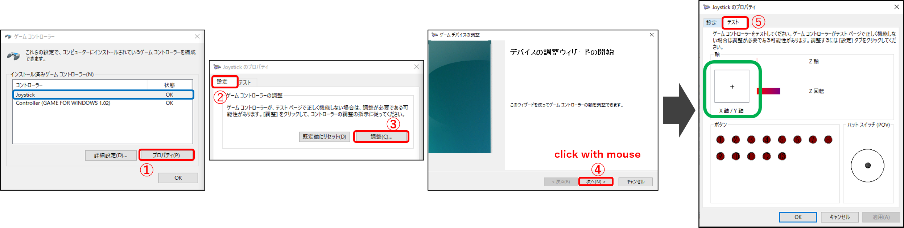
個々の基盤、コンバータ、USBポートやHUB、デバイスの認識に問題があるかもしれません。根本的な解決方法は示せないのですが、強引に動かす策がいくつか考えられます。
・ (beatoraja 限定) beatoraja-configuration > Input > MODE 9KEYS >「JKOC HACK」にチェック
・ (LR2 限定) LR2SETUP > OPTION >「選曲にポプコンを使う」にチェック *選曲画面での操作にバグがあるので注意
・ JoyToKey でキーボード入力にリアサインする
beatoraja を起動して、SETTING > キーコンフィグ (KEY CONFIG) を起動します。
キーボードの左右キーで 9 KEYS の設定画面 に移動 > [2]キー を押して Controller Device 1 をACコンのデバイス名に変更します。(筆者のDAOコンの場合は "Joystick" 表示)
選曲画面でもACコンで操作したい場合は [1]キー を押して Music Select を popn に設定しておきます。
次に、上下キーで 1～9 KEY を個々選択し、Enter キー > 表示が赤色になったら 対応するACコンのボタンを入力 していきます。
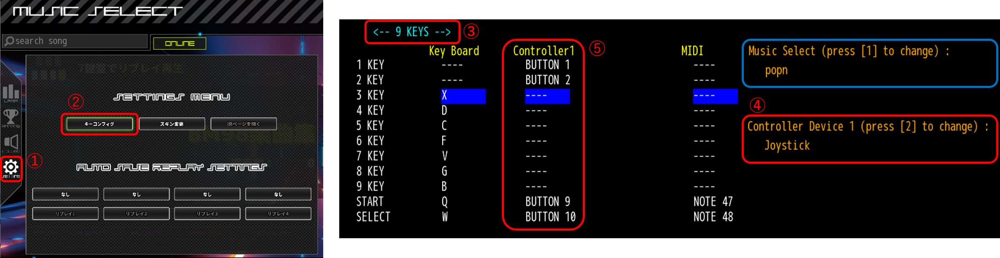
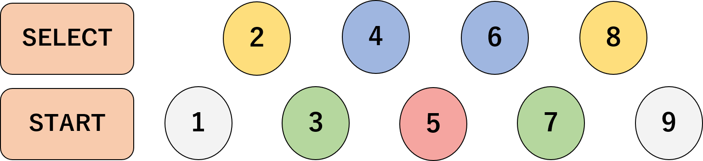
全ての KEY をコントローラからの入力に上書きしたら Esc キー で選曲画面に戻ります。これでプレイ可能な状態になりました。
はっきりした原因が分からないのですが、beatoraja や PC の再起動、デバイスの再接続を行っていると突然解消されるようです。
・ beatoraja-configuration > Input > MODE: 9KEYS > で、アナログスクラッチ にチェックを入れると反応するようになる？
・ 頂いた情報の例 随時募集中
Reference :
■ beatoraja\manual\hotkeys.txt
■ beatorajaの設定などのまとめ
選曲画面での操作方法は、上記「キーコンフィグ設定 - beatoraja」で Music Select に popn を適用した場合のものです。それ以外の場合、選曲はマウスで行ってください。
本家 IIDX に慣れている人の場合は、SP の 2Pサイド (1～7KEY が鍵盤、8～9KEY がスクラッチ) の操作イメージで覚えておくと直感的かもしれません。
筆者が特に使用頻度が高いと感じるものを太字 にしてみました。
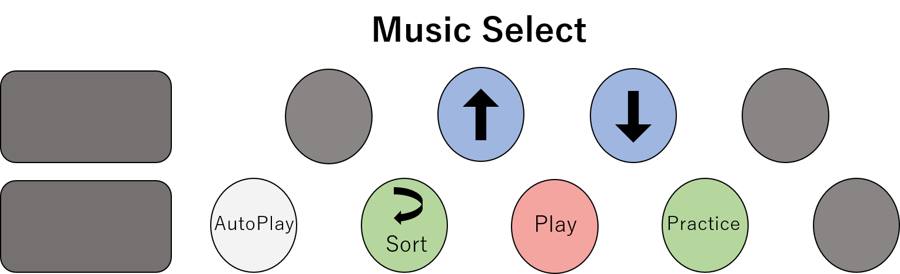
・ 1KEY : オートプレイ
・ 5KEY : 通常プレイ
・ 7KEY : プラクティスモード (後述) でプレイ
・ 3KEY : 一つ前の階層 / 5KEY で一つ先の階層に移動
・ 4,6KEY : 上下に移動
・ 選曲画面の最上層で 3KEY : 楽曲ソートの切り替え (曲名 - アーティスト名 - BPM …)
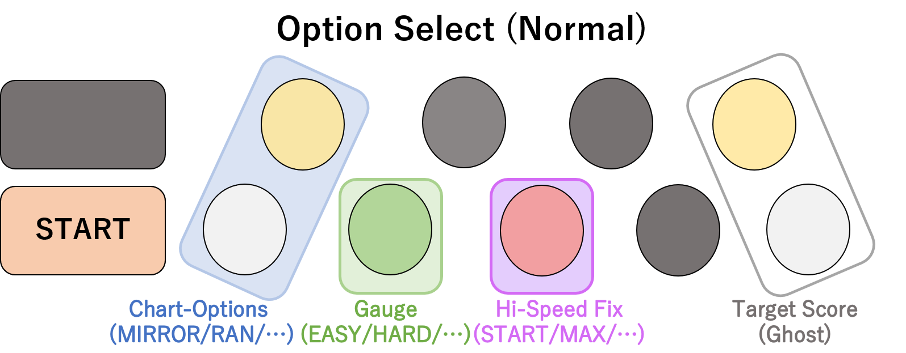
・ START ボタンを押しながら選択します
・ 1,2KEY : 譜面オプションの設定
- R-RANDOM : レーン配置がローテーション規則上でランダム化します (123456789 → 3456789 12 など)
- H-RANDOM : 連打が発生しづらくなる補正のかかった S-RANDOM です。アシストオプション扱いになるので要注意
・ 3KEY : ゲージオプションの設定
- EX-HARD : HARD の上位ゲージ
- A-EASY : EASY の下位ゲージ
・ 5KEY : ハイスピード固定化オプションの設定
- MAIN-BPM : 曲中で最も長い BPM 区間に自動調節します。通常時はこの設定がオススメ
- START-BPM : 曲開始時の BPM に自動調節します
- ハイスピードの速さ自体を決めるオプションではないので注意
・ 8,9KEY : ターゲットスコアの設定
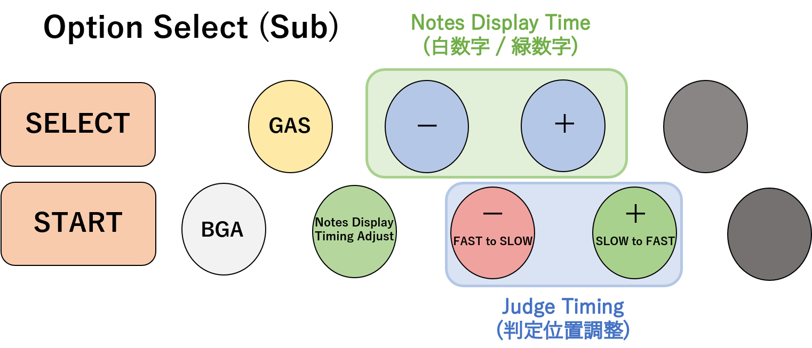
・ START + SELECT ボタンを押しながら選択します
・ 1KEY ： BGA の表示切替
・ 2KEY ： GAUGE AUTO SHIFT (GAS) オプションの切り替え
- CONTINUE ： HARDゲージなどが途中で空になっても演奏をそのまま続行
- SUVIVAL TO GROOVE ： HARDゲージなどが途中で空になったときグルーヴゲージに移行
- BEST CLEAR ： ゲージオプションの設定に関わらず、プレイ中最も良いゲージを適用
- SELECT TO UNDER ： 選択したゲージオプションの範囲内で、プレイ中最も良いゲージを適用 (範囲はオプションパネル左側の Lower Limit of GAS で選択可能)
・ 3KEY ： ノーツ表示時間自動調節機能の切り替え
・ 4,6KEY ： ノーツ表示時間の調整 (いわゆるハイスピード設定、IIDX でいう 緑数字)
- 長押ししていると素早く数値変更できます
・ 5,7KEY ： 判定タイミングの調整
- FAST が出る場合は [-] 方向 SLOW が出る場合は [+] 方向に調整
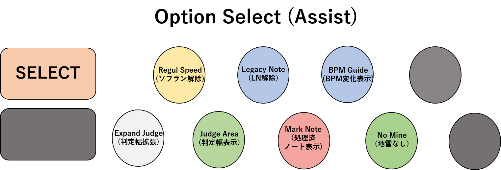
・ SELECT ボタンを押しながら選択します
・ アシストオプションのため、使用しているとデータが保存されない場合があります。誤ってONにしないように要注意！
・ 通常プレイで使用することはあまりないと思われます。
・ もう少し詳しく知りたい場合は beatoraja の設定などのまとめ - プレイオプションタブ などが参考になるかもしれません。
・ 数字1 : プレイモードフィルター
・ 数字2 : ソート変更 (選曲画面 3KEY の挙動と同じ)
・ 数字3 : LN / CN / HCN の切り替え
- (注意) データは LNモードごと別々に保存されます。クリアしたのにランプが消えた！ というときはまずここを確認
- LN モードが本家に一番近い挙動です。
- 本家と異なり、LN を押し直した場合は必ずミス扱いになります。
・ 数字4 : リプレイを選択
・ 数字5 : オプション選択 (サブ) の設定 (START+SELECT で開く方法と同じ)
・ 数字6 : キーコンフィグ 画面に移動
・ 数字7 : ライバル変更
・ 数字8 : 選曲中の譜面と同じフォルダ内の譜面を表示
・ 数字9 : 選曲中の楽曲の同梱テキスト (readme.txt 類) を開く
----------
・ F1 : FPS表示
・ F2 : 選択中のフォルダ・難易度表をリロード
・ F3 : 選択中の BMS が格納されているフォルダをエクスプローラーで表示
・ F4 : フルスクリーン / ウインドウモードの切り替え
・ F6 : スクリーンショット
- beatoraja > screenshot フォルダ内に保存されます。リザルト画面以外でも随時使用可能
・ F8 / F9 : お気に入り (Favorite Folder) / 不可視フォルダ (Invisible Folder) への登録
- F8 は楽曲全体(全譜面) を一括登録 F9 は選択中の譜面のみ を登録
- 1回押すと Favorite Folder に登録され、もう1回押すと Invisible Folder に登録されて、Invisible Folder 外からの選曲が不可能になります。
- Invisible Folder で F8 / F9 を押すと、フォルダ登録が解除されます。
- 万一 Invisible Folder 自体が選曲画面に現れない問題が発生した場合は、最新版の beatoraja にある beatoraja\folder\default.json を上書きしてください。
・ F11 : 選択中の譜面の IR を表示
- IR に接続していない場合は利用できません
・ F12 : スキンカスタマイズ 画面に移動
----------
・ Shift + Windows + 左右矢印キー : デュアルモニタ環境の表示ウィンドウ切り替え
・ Ctrl + F3：md5 ハッシュ値をクリップボードにコピー
・ Ctrl + Shift + F3 : sha256 ハッシュ値をクリップボードにコピー
次のオプションは、beatoraja-configuration > プレイオプション > 9KEY の 当該欄に使用チェックを入れた場合のみ有効化 されます。あらかじめ取捨選択して設定しておきましょう。
レーンカバー (SUDDEN) についてはプレイ画面の操作でも着脱が可能ですが、普段装着したままで遊んでいるという場合はここでチェックしておくと便利です。
・ レーンカバー (SUD+) : 画面上部の表示領域制限です。チェックすると、装着した状態での HS設定 (緑数字) が曲開始時のデフォルト値になります。
・ リフト (LIFT) : 判定ライン自体の上下移動
・ HIDDEN : 判定ライン側の表示領域制限
・ HI-SPEED 固定自動調整 : IIDX のいわゆる 皿チョン に相当する機能です。START + 8,9KEY を押すと、即座にHSが緑数字のデフォルト設定値へと再FIXされます。
・ GUIDE SE : 判定に応じた打鍵音を外挿します。beatoraja > defaultsound フォルダ内の音源を入れ替えることでカスタマイズできます。
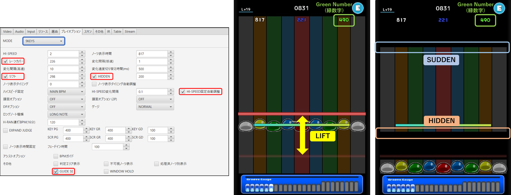
(全般) ハイスピード固定化オプション (Hi-Speed Fix / HS-FIX) を有効にしている想定です。
SUD+ / HIDDEN / LIFT 位置を変更した後は、譜面を叩いて (FAILED でも構わないので) リザルト画面に遷移したタイミングで設定が保存されます。
-----------
・ START + 1～7KEY : 一時的にハイスピードを1段階変更
- 曲が終了すると設定値 (緑数字) はリセットされます。
- IIDX でいう FHS 使用中の HS 変更に相当 *一部のソフラン対策以外では使用しないかもしれません
・ START ボタンをダブルクリック : レーンカバー (SUD+) の着脱
・ SUD+ 装着中 に START + 8,9KEY : SUD+ 表示位置の調整
・ SUD+ 脱着中 かつ HIDDEN / LIFT 有効時 に START + 8,9KEY : HIDDEN / LIFT 表示位置の調整
・ HI-SPEED 固定自動調整 有効時に START + 8 or 9KEY を一瞬押す : そのタイミングのBPM値に緑数字を再設定
- SUD+ / HIDDEN / LIFT の適用状態に関わらず動作します。(同時に動作してしまうため、一瞬だけ押すようにする必要があります)
- IIDX でいう 皿チョン に相当 事実上のソフラン対策オプションです。
・ SELECT + 1～9KEY : デフォルトのノーツ表示時間 (緑数字) を1段階変更
- 選曲画面のサブオプション「ノーツ表示時間の調整」と同じことがプレイ中に可能ということです。曲終了後も設定値 (緑数字) は維持されます。
- IIDX でいう FHS 解除 - SUD 位置変更 (緑数字調整) - FHS 再設定 の流れに相当
・ START + SELECT を長押し : 強制終了
- Esc キー を押した場合も同様
・ 暗転中に START または SELECT を押し直し : クイックリトライ
・ キーボードの数字 1,2,3,4 : リプレイ保存 *同時に最大4枠
・ 6KEY : ゲージオプションごとのゲージ推移 表示切り替え
・ 1,3KEY : 選曲画面に戻る
・ 5KEY を長押し : ランダムオプションの配置を維持せずに再プレイ (IIDX 仕様)
・ 7KEY を長押し : ランダムオプションの配置を維持して再プレイ (LR2 仕様)
選曲画面から 7KEY でプラクティスモードに移行します。
プラクティスモードでは、オプションは全てキーボードの上下左右キーで入力し、最後にコントローラの 1KEY (左白) を押すと再生開始 されます。
・ START TIME / END TIME : 再生区間の設定
- 区間スキップがないので絞り込みに少し時間がかかりますが、一度入力した内容は譜面ごとに保存されるので 2回目以降はショートカット可能です。
・ GAUGE TYPE / GAUGE CATEGORY / GAUGE VALUE : グルーヴゲージの仕様の細かい絞り込み
- NORMAL / HARD などの基本的な設定のほか、他プレイスタイルの仕様を適用するなどの変わった使い方もできます。
- TYPE: GRADE , CATEGORY: LR2 と設定することで LR2 の段位ゲージを疑似再現できます。
・ JUDGERANK / TOTAL : 主に創作譜面のバランス調整向けの機能
・ FREQUENCY : 再生速度の変更
・ OPTION-1P : プレイオプションの設定
LR2 を起動して、SYSTEM OPTION > KEY CONFIG を起動します。
マウス操作で 9 BUTTONS の設定画面 に移動し、はじめに F2キー (初期設定に戻す) を押してデフォルトのキー設定を全解除します。
画面内のボタンのアイコン > その下のスロットの順にクリックし、スロットが入力受付状態(青色) になったら 対応するACコンのボタンを入力 していきます。
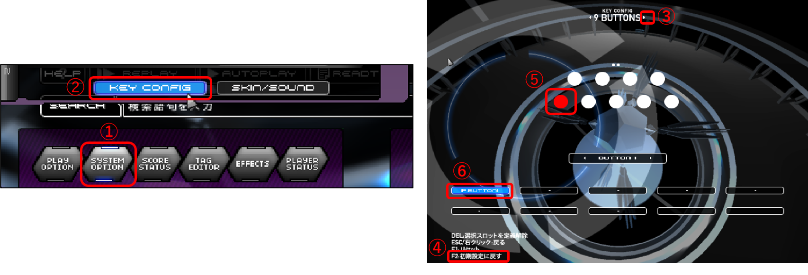
全てのボタンについてACコンからの入力を登録したら完了です。Esc キー で選曲画面に戻りましょう。これでプレイ可能な状態になりました。
LR2 の場合、選曲画面で PMS の ACコンを使うには 7KEYS のキーコンフィグを改変する必要があります。
そのため、7/14KEYS も並行して遊ぶ予定がある場合は、この設定は行わない方が良いかもしれません。
PMS 以外遊ばないという人向けの 7KEYS (Music Select) オススメ設定例
F2キー (初期設定に戻す) を行ってから、下図のようにアサインしてください。
2,4KEY にはそれぞれ2種類のボタンをマルチアサインします。(LR2 はマルチアサインを受け付ける仕様になっています)
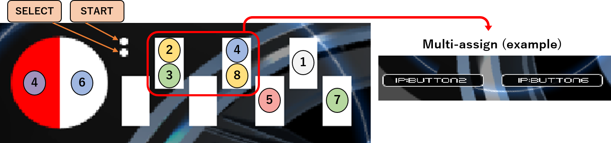
選曲画面での操作方法は、上記「選曲画面でもACコンを使いたい場合の設定」を使用している場合のものです。それ以外の場合、選曲はマウスで行ってください。
筆者が特に使用頻度が高いと感じるものを太字 にしてみました。
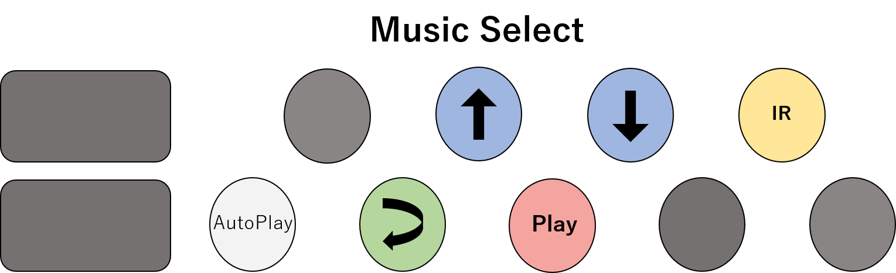
・ 1KEY : オートプレイ
・ 5KEY : 通常プレイ
・ 3KEY : 一つ前の階層 / 5KEY で一つ先の階層に移動
・ 4,6KEY : 上下に移動
・ 8KEY : IRランキングを表示 (長押しが必要な場合があります)
- IR上のプレイヤーにカーソルを合わせた状態でオートプレイ : そのプレイヤーのリプレイを再生
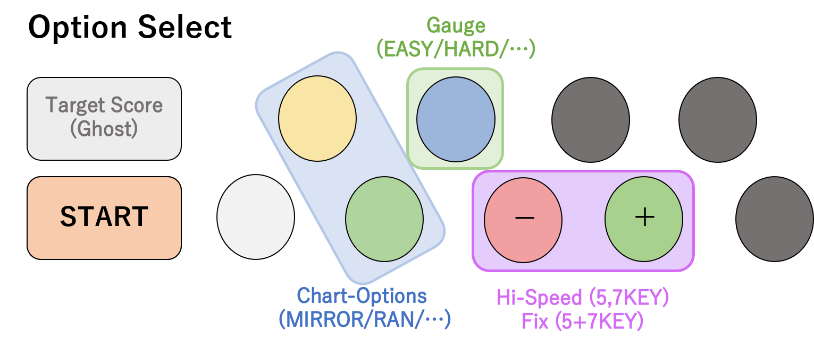
・ START ボタンを押しながら選択します
・ START を押しながら SELECT : ターゲットスコアの設定
・ 2,3KEY : 譜面オプションの設定
- SCATTER (H-RANDOM) : 連打が発生しづらくなる補正のかかった S-RANDOM です。イージークリア扱いになるので要注意
- 2,3KEY を一定時間押しっぱなしにすると EXTRA MODE という高難易度モードに切り替わります。ランプが消えた！譜面がおかしい！と思ったらまずここを確認
・ 4KEY : ゲージオプションの設定
- EX-HARD 及び A-EASY は設定できません
・ 5,7KEY : ハイスピード設定 (5KEY で HS 減少 7KEY で HS 増加)
・ 5KEY を押しながら 7KEY : ハイスピード固定化オプションの設定
- CONSTANT (REGUL-SPEED) : ソフランが解除されます。イージークリア扱いになるので要注意
- LR2 の場合は MAX-FIX が主流です。beatoraja の MAIN / START-FIX は設定できません。
- 緑数字表示もありませんので、FIX 後の HS 値はプレイしながらの微調整が必要です。
・ SYSTEM OPTION > LANE COVER を ON / OFF : SUD+ の使用切り替え
- 使用している選曲スキンによっては、オプション画面に切り替えアイコンが表示される場合があります。
- SUD+ の表示位置はプレイ画面で調整します。
・ F1 : 説明の表示
・ F2 : 変態向けプレイオプション
・ F3 : レベルと難度カテゴリの変更
・ F4 : フルスクリーン / ウインドウモードの切り替え
・ F5 : LR2IR 接続
・ F6 :スクリーンショット(成功するとシャッター音が鳴ります)
- LR2beta3 フォルダ直下に保存されます。リザルト画面以外でも随時使用可能
・ F7 : FPS表示
・ 選曲画面 > EFFECTS > FX > PITCH > FREQ スライダーを変更 > スイッチをON : 再生速度の変更
- ±12段階 (BPM 50～200%) で設定できます。＋方向に設定した場合、クリアランプが保存されます。
- ON/OFF スイッチの位置がスキンによっては分かりづらいので注意してください。デフォルトスキンの場合は下記画像参照 赤枠部分をクリックします。
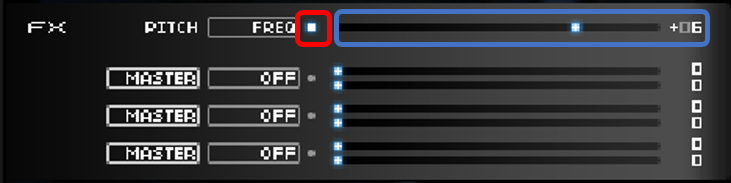
・ オプション選択画面で 2,3KEY (譜面オプション) を長押し : EXTRA MODE の ON/OFF
- 余剰キー音を詰め込んだ譜面になります。正規譜面の概念があり、ランプも別枠で保存されます。
・ 選曲画面で F2 キーを押しながら キーボードの左右上下キー : マニアックオプションのON/OFF
- 全21種類 どれもこれもパンドラの箱！
・ PMSの上達に役立つかもしれないマニアックオプションの利用例
・ START + 1～7KEY : ハイスピードを1段階変更
・ START ボタンをダブルクリック : レーンカバー (SUD+) の着脱 ※上記「レーンカバー (SUDDEN+ / SUD+) の使用設定」を有効化している場合のみ
・ SUD+ 装着中 に START + 6,7KEY : SUD+ 表示位置の調整
・ START + SELECT を長押し : 強制終了
- Esc キー を押した場合も同様
----------
・ プレイ中に数字キーの 1～9 + 上下左右キー : スキン描画の調整
・ 筆者はこの機能について詳しくありません。解説記事 「Re:sweet LR2を便利に使おう！」 などを参照してください。
・ 1キー : スキンのオフセット位置変更
・ 2キー : スキン拡大率変更
・ 3キー : 判定文字の表示位置変更
・ 4キー : ノートオブジェクト拡大率変更
・ 5キー : 描画制限
・ 6キー : 1P側レーン位置変更 (疑似 LIFT)
・ 7キー : 2P側レーン位置変更 (疑似 LIFT)
・ 下段ボタンで決定 : 選曲画面に戻る
・ 上段+下段ボタンを長押し : クイックリトライ (ランダムオプションの配置は維持されます)
- ランダムの再抽選を行いたい場合は、一度選曲画面に遷移する必要があります。